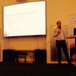
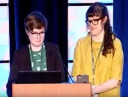
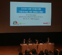
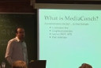
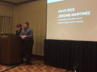

2016-04-07, MediaConch at
PREFORMA Open Source Preservation Workshop
, Jérôme Martinez

Slides (HTML)
Slides (PDF)
2016-03-10, MediaConch at Code4Lib, Ashley Blewer

Slides (HTML)
Video
2016-03-08, MediaConch at
JTS
, Erwin Verbruggen

Slides (Powerpoint)
Slides (Online)
Slides (PDF)
2016-01-30, MediaConch at FOSDEM, Jérôme Martinez

Slides (HTML)
Slides (PDF)
Video
2015-11-20, MediaConch at AMIA, Ashley Blewer / Dave Rice

Slides (HTML)
Slides (PDF)
2015-10-08, FFV1 and MediaConch at FIAT/IFTA, Tessa Fallon / Bert Lemmens / Peter Bubestinger
Blog post about the workshop
2015-09-27, MediaConch at IASA, Herman Lewetz
Slides (Powerpoint)
,
Slides (PDF)
,
Paper (HTML)
2015-07-22, IETF standardization of FFV1 and Matroska, Tessa Fallon
IETF Agenda
2015-06-10, MediaInfo at Metadata Developer Network (MDN), Jérôme Martinez
Slides (HTML)
,
Slides (PDF)
2015-02-11, PREFORMA at Code4Lib, Ashley Blewer
Slides (HTML)
,
Video
2015-01-31, Enabling Preservation by means of Open Source at FOSDEM, Dave Rice
Slides (PDF)
,
Video
{kind=link}
{kind=link}